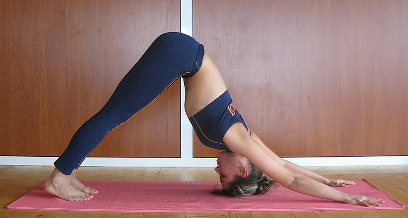

cow

source: Yoga Journal
cat

source: Yoga Journal
plank

source: Yoga Journal
| Current pose: downward dog | Adjacent poses: table top | cow | cat | child's pose | plank | standing bend, legs together | down dog, one leg raised | upward dog | standing bend, legs apart | peddle feet | inverted tripod | |
|
 |
cow
cat
plank |